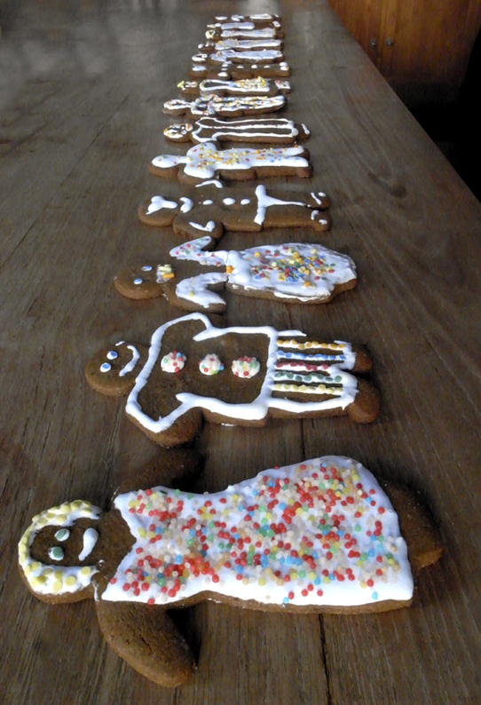
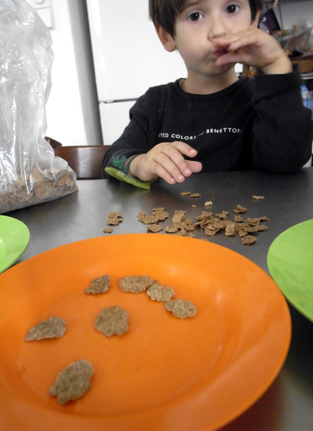
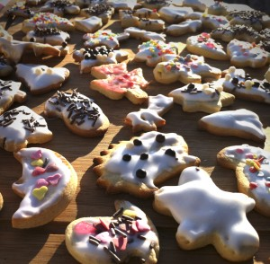
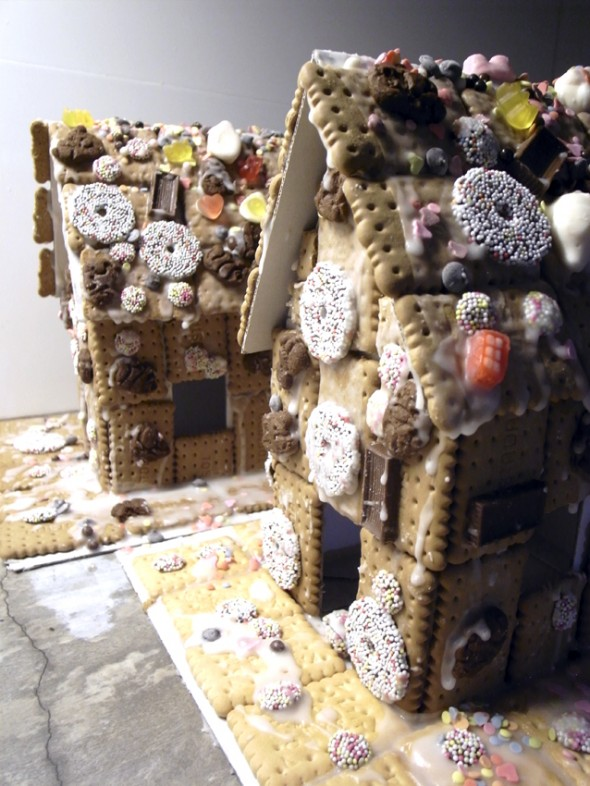
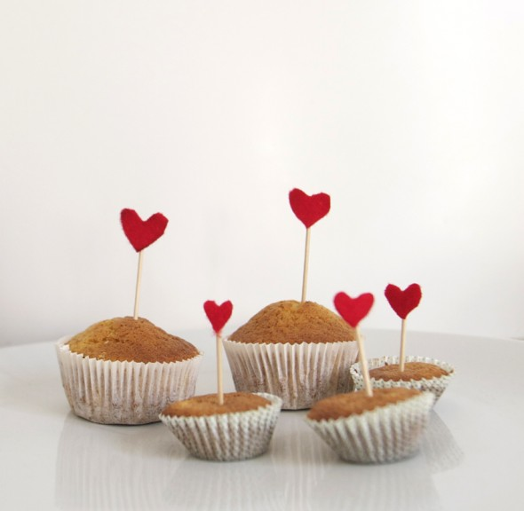
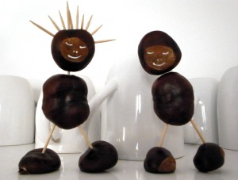

Keks Wettbewerb:
Bilge, Ingela, Tim, Hannah, Noah und ich haben Kekse gemacht und sie dann dekoriert.


Keks Wettbewerb:
Bilge, Ingela, Tim, Hannah, Noah und ich haben Kekse gemacht und sie dann dekoriert.

Noah und seine Cornflakes: Noahs Cornflakes geben dem Teller ein trauriges oder glückliches Gesicht!
Weiterlesen →

Hexenhäuschen: Das Hexenhäuschen aus dem Märchen "Hänsel und Gretel" von den Brüdern Grimm. Ein Papphaus voll mit Keksen und Süßem.
Weiterlesen →
enlace Wurm: Ich habe diesen tollen Wurm im Internet entdeckt: link . Ich habe ihn ein wenig verändert, damit die Kinder ihn mit in die Schule…
Weiterlesen →
